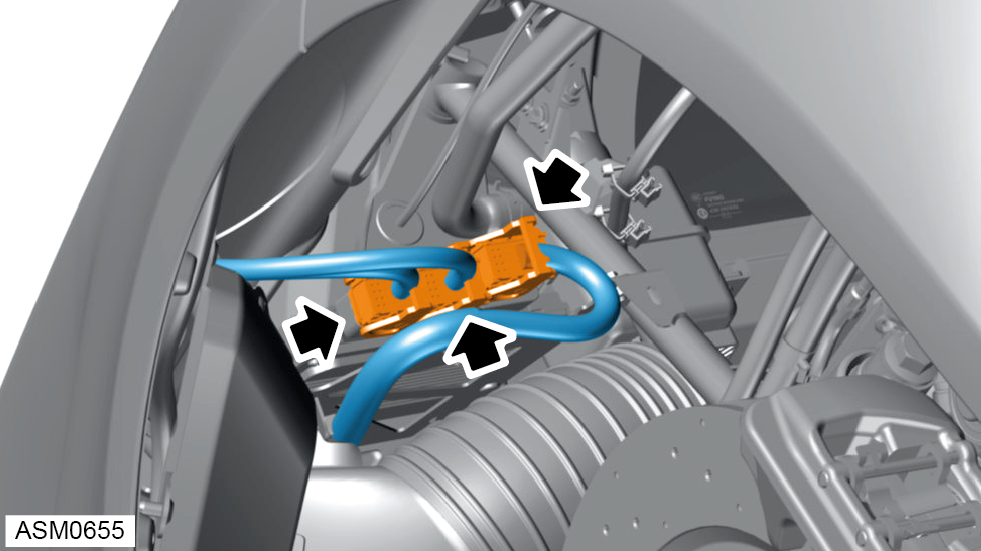
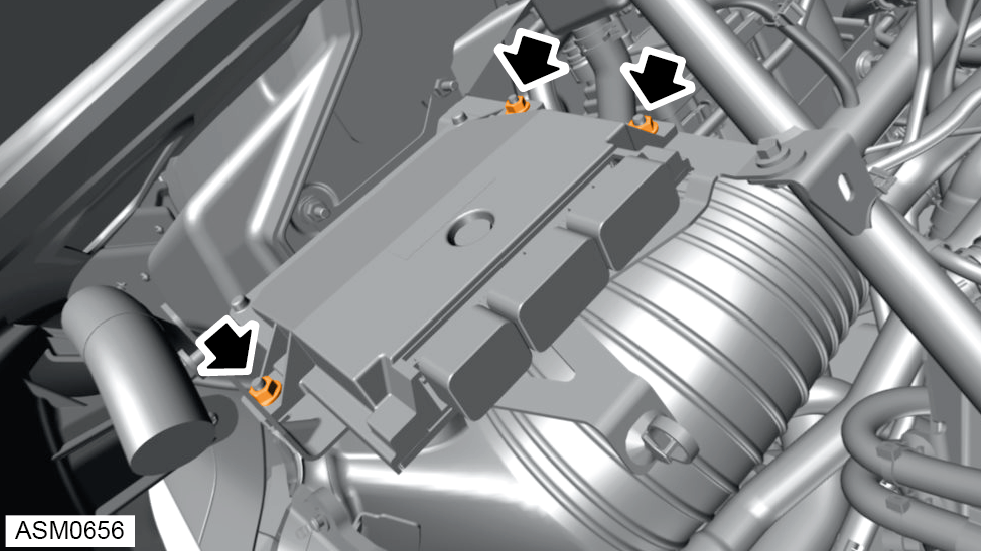
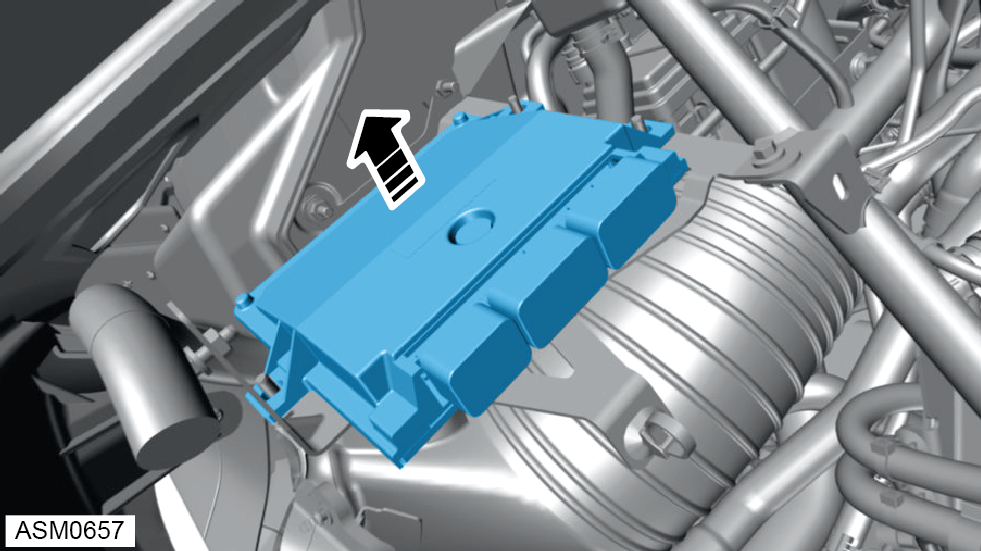

Electronic Control Module (ECM) - V6
Print
Operation Code: 17.06.13-02
Removal
- Disconnect battery. Refer to procedure.
- Remove rear wheelarch liner left side. Refer to procedure.
- Remove transmission control unit. Refer to procedure.
NOTE: Only applies to vehicles fitted with automatic transmission.

- Disconnect harness connectors (x3) secured to ECM and move harness aside.

- Remove M6 nuts (x3) securing ECM to bracket. Torque 4.5 Nm.

- Remove ECM.
Installation
- Installation is the reverse of removal procedure.
- After installation download software using Emira DS.
- Perform a diagnostic read and clear error memory using Lotus Insight tool.